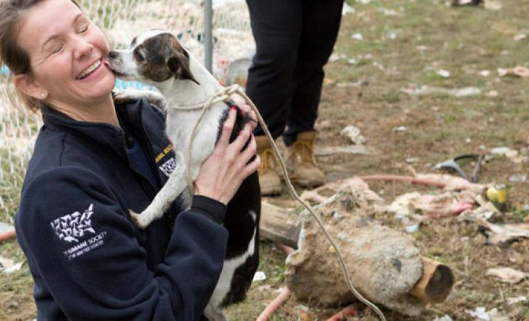

¿Quienes somos?
Somos un grupo de voluntarios dedicados a resparar perritos en total abandono o maltrato, los rehabilitamos, los cuidamos, sanamos y hacemos que vuelvan a sentir confianza en los humanos. Nuestros perritos necesitan mucho amor y cariño, cada uno de ellos ha pasado por situaciones fuertes y que deseamos que no les vuelva a ocurrir, por eso esperamos personas que nos aseguren que los cuidaran y amaran mucho.
